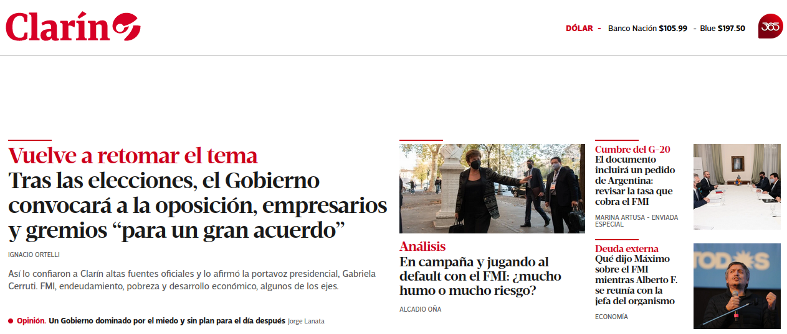
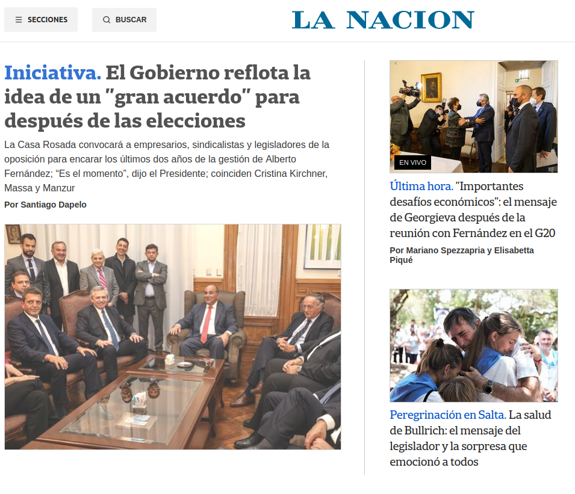
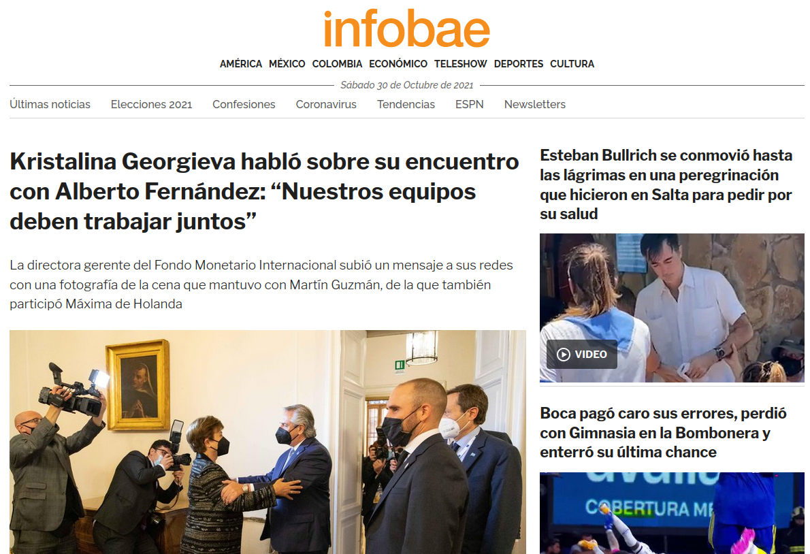
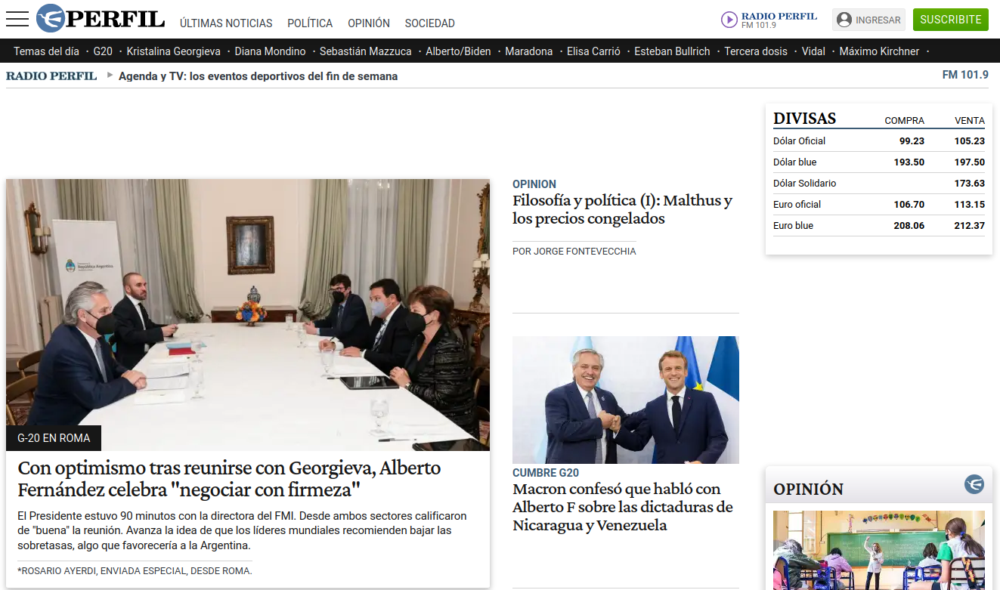
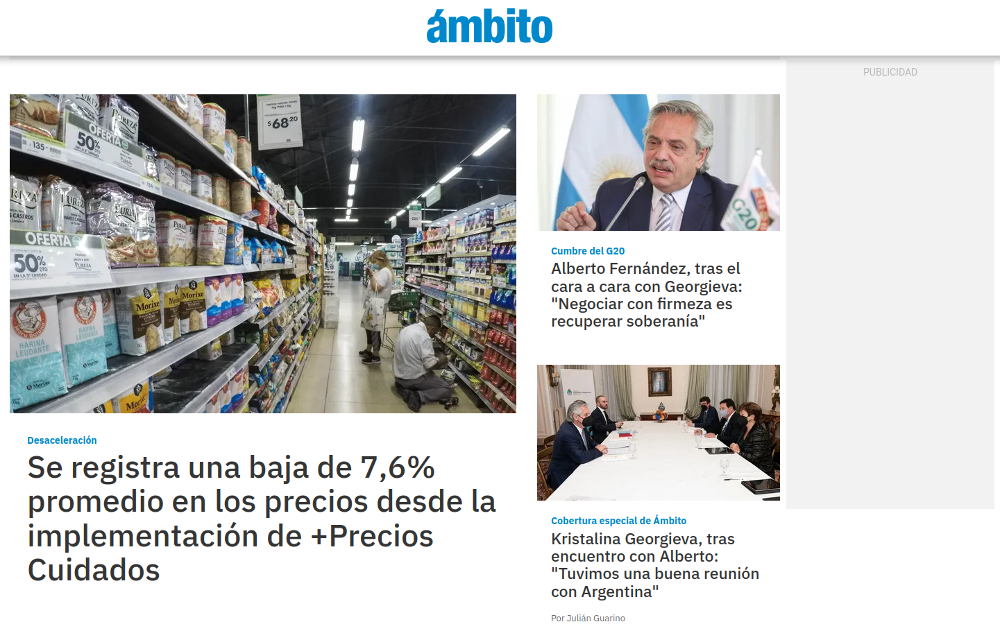
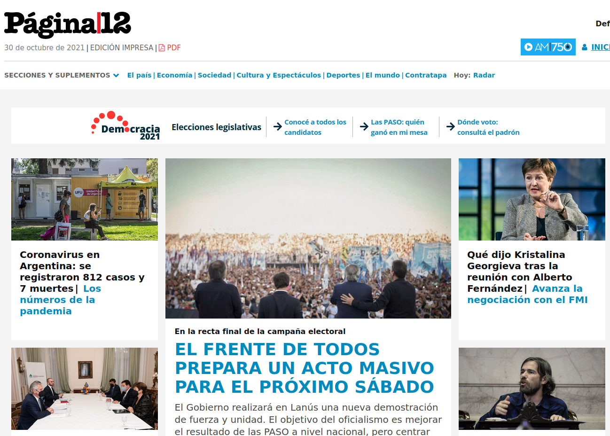
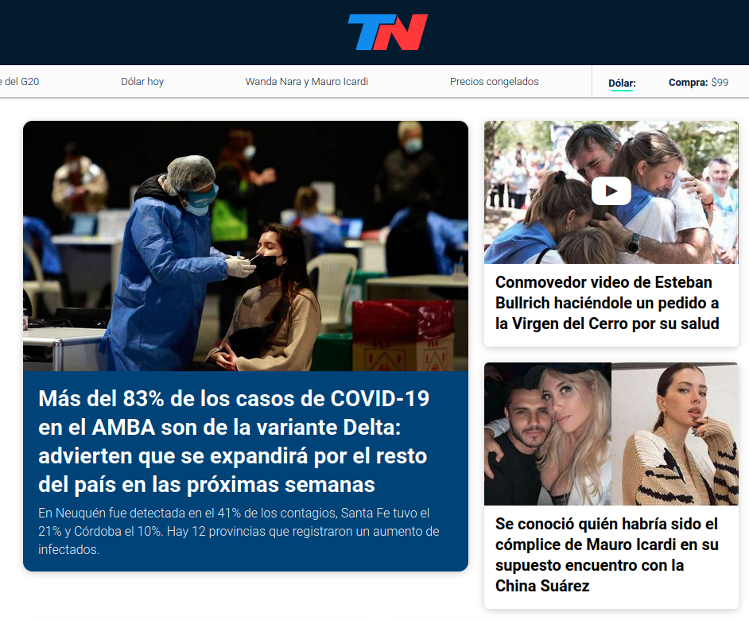

Trabajo armado por el 'equipo de medios' del labo de datos del Ateneo.
Tomando como disparador la Ley de Etiquetado Frontal de Alimentos, desarrollamos este análisis que comparte la escencia de la ley: alertar sobre contenido no deseado en los productos que consume la gente. Para decidir las etiquetas, usamos todas las noticias de Septiembre 2021 de cada diario para armar un ranking de 'secciones con más noticias' para cada diario. Por ejemplos: 'clarin' publicó en Septiembre 1180 noticias de 'política', 1039 de 'internacional' y 908 de 'deportes'. Ese fue su top 3. La idea es que la próxima vez que vayas a buscar info a estos medios tradicionales, sepas más detalladamente con qué te vas a encontrar.
El gran diario argentino @clarincom tiene a 'política' como su sección principal, pero en el podio también entran 'internacional' y 'deportes'. Detalle a destacar, tiene una sección llamada 'campo' con varias noticias.
Lo de @lanacion es un caso particular. Nació como una 'tribuna de doctrina', y hoy su top 3 es 'sociedad', 'lifestyle' y 'espectáculos'. Tranquilamente podría ser el top 3 de una revista de actualidad.
@infobae contiene un ALTÍSIMO NIVEL de noticias de 'internacional': noticias de 'méxico', 'chile', 'colombia', 'eeuu' y -sobretodo- 'venezuela', entre las más destacadas. En números, durante Septiembre tuvo 50k de noticias, contra 800 noticias de 'política', la segunda sección.
@perfil tiene un podio más tradi: 'política', 'economía' y 'deportes'. En el cuarto lugar vienen 'espectáculos' y en el quinto, 'opinión': es el medio que más 'opiniones' publica. Último en el ranking aparecen las secciones 'tecnología' y 'ciencia'.
@ambito es un diario económico/financiero -su nombre 'Ámbito financiero' bien lo indica-. Pero en su top 3 aparecen 'política', 'sociedad' y 'economia'. Ni 'economia' es su sección principal, ni 'finanzas', que existe y aparece en el puesto 5 de secciones con más noticias.
@paginadoce es un poco 'rosariocéntrico': su tercera sección con más noticias es 'rosario12'. Las primeras dos secciones con más noticias son 'política' y 'sociedad'. Es uno de los medios que menos noticia de 'cultura' publica.
@tn tiene un top 3 de estilo parecido al de @lanacion: 'política', 'deportes' y 'espectáculos'. Podemos decir que NO es un diario económico: publica más noticias de 'música' y de 'estilo' que de 'economía'.